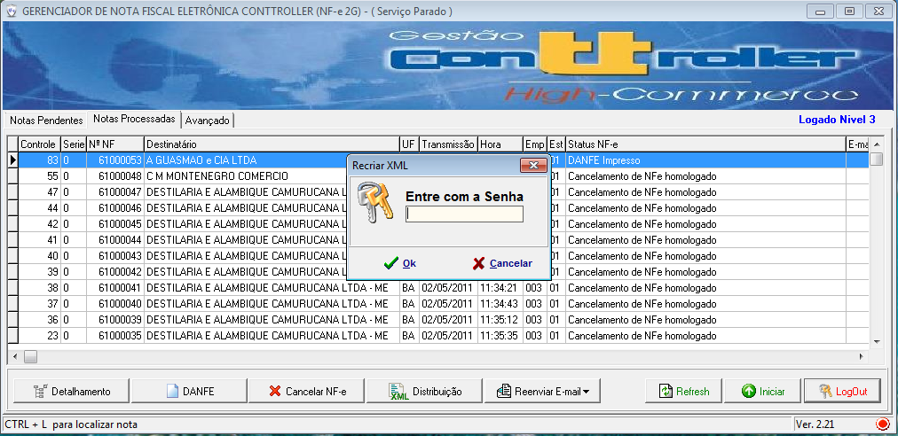
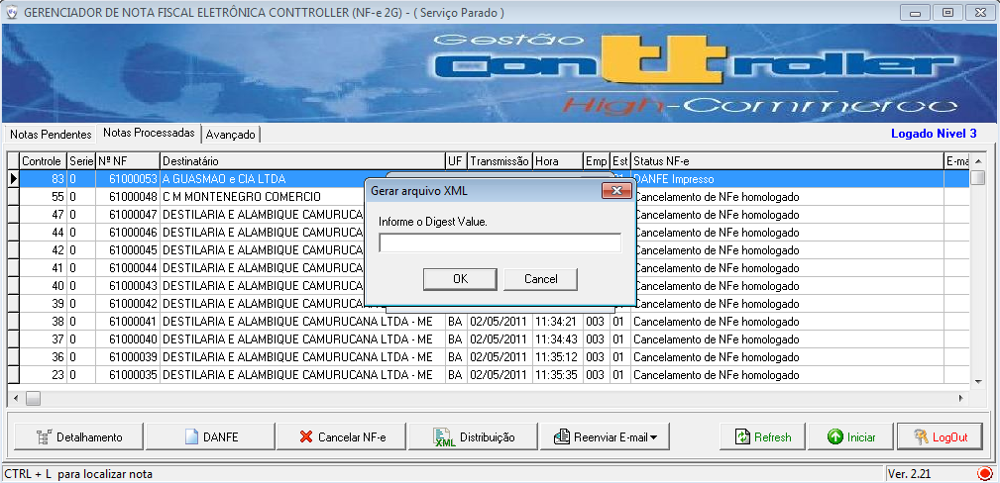
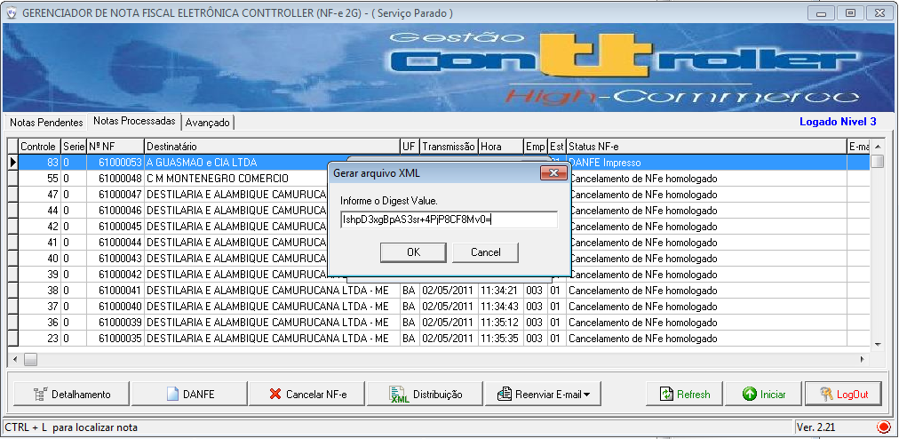
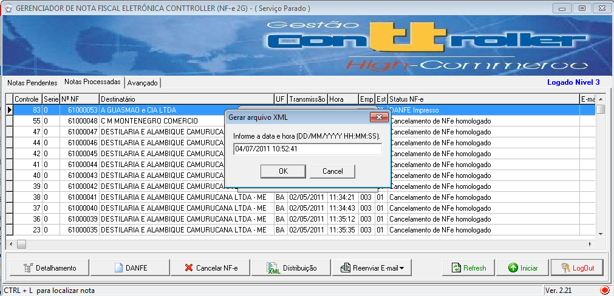
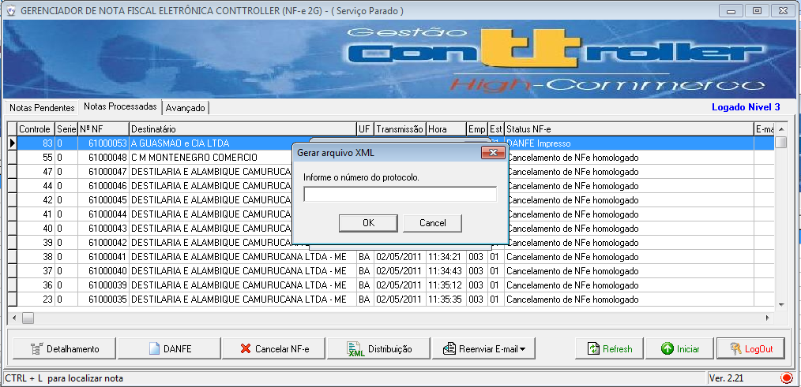
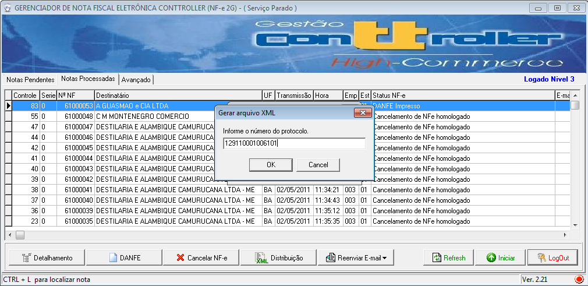
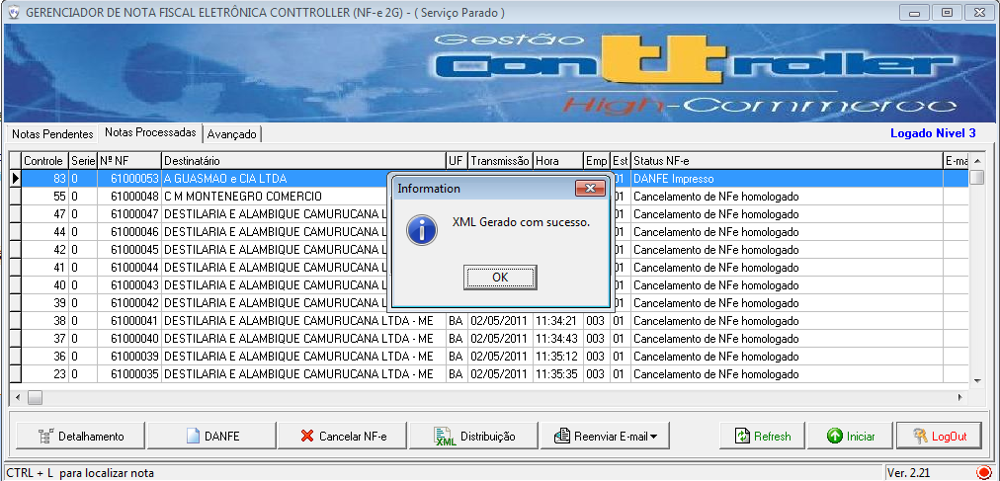
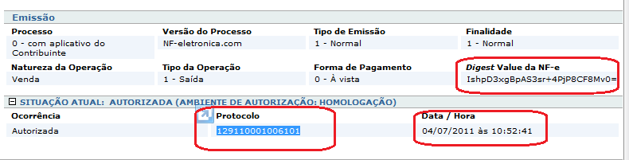

-Recriar XML Distribuição |
  
|
-Recriar XML Distribuição |
|
A NF-e é um XML que deve ser gerado pelo emissor da NF-e com todos as informações que a operação exige.
Assim, por exemplo, uma operação praticada por contribuinte do IPI ou de importação deverá ter o grupo de informações do IPI.
É possível gerar uma NF-e sem as informações que são exigidas para operação, apesar da SEFAZ autorizar o uso desta NF-e, isto não quer dizer que a nota fiscal está correta.
Para evitar equívocos é importante que o usuário conheça a estrutura e as informações que são requeridas na nota fiscal eletrônica, esta familiaridade vai ajudar na correção dos problemas de preenchimento e principalmente identificar as informações necessárias e como e onde informar.
Roteiro para gerar a NF-e com o conjunto mínimo de informações requeridas:
A NF-e é uma estrutra de árvore com o elemento raiz chamada NF-e que tem diversos "galhos/folhas" Para criar a NF-e com a DLL, o usuário deve começar a criar os itens das extremidades, ou seja os itens mais internos. Assim, uma boa ordem de criação dos grupos seria:
1.criar o grupo de informações do emitente;
2.criar o grupo de informações de identificação da NF-e;
3.criar o grupo de informações do destinatário;
4.criar o grupo de item da NF-e:
4.1. criar o detalhe do produto;
4.2. criar o detalhe do ICMS;
4.3. criar o detalhe do PIS;
4.4. criar o detalhe do COFINS;
4.5. criar o detalhe do imposto, consolidar ICMS, PIS e COFINS;
4.6. criar o detalhe do item, consolidar produto e imposto;
5.criar o grupo de total da NF-e ;
6.criar o grupo de informações do transporte;
7.criar o grupo de informações adicionais;
8.consolidar a NFe, consolidando os grupos criados anteriormente.
Recriado XML CRTL+R
1- selecionar a NFe
2- Digitar CRTL+R
3- Digitar senha 'nfe123'

4- Confirmar criação de arquivo XML - Yes
5- Informar a DIGEST VALUE . Consultar no site do sefaz-ba

6- Clicar em OK

7- Informar a DATA e HORA da Transmissão. Consultar no site do sefaz-ba .
8- Confirma OK

9 - Informar número do protocolo.

10- Confirmar OK

11- Sistema confirma criação de XML

Exemplo de NFe no site
